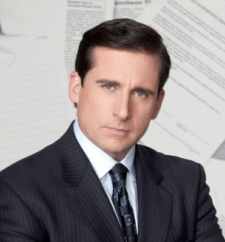
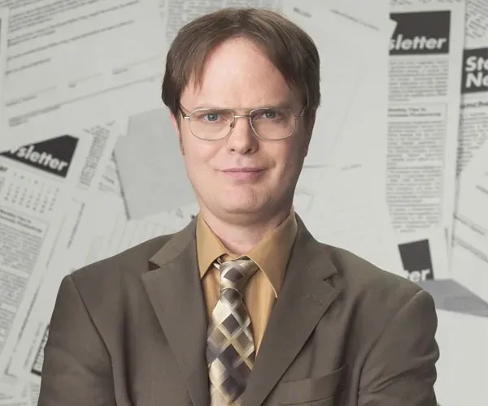
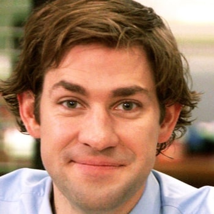
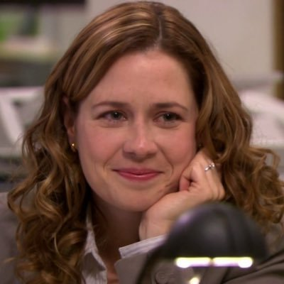
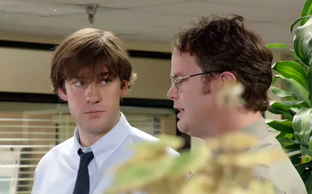
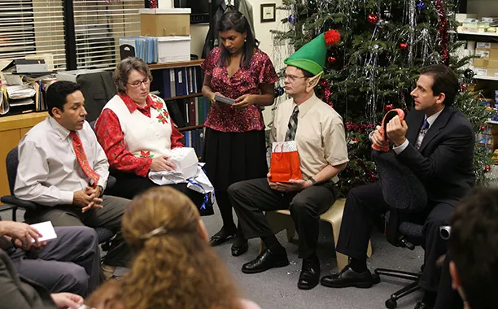
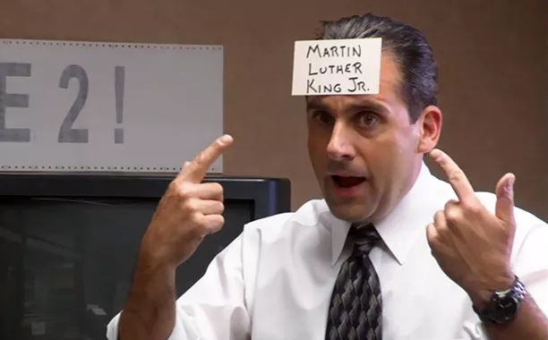

The Office

A mockumentary on a group of typical office workers, where the workday consists of ego clashes, inappropriate behavior, tedium and romance.
Characters
Michael Scott

Michael is the regional manager of Dunder Mifflin Paper Company in Scranton, Pennsylvania. Michael thinks of himself as an extremely capable boss who can handle any problem efficiently. In reality, Scott is ill-equipped to handle most of the problems that arise at Dunder Mifflin. Michael loves to host conference room meetings where typically very little is accomplished but he gets to be the center of attention. Michael is a very accomplished salesperson, which explains why he was promoted to regional manager but his knowledge of economics and management is rather unimpressive. This creates many teachable moments as Micheal's understanding of basic economic concepts is typically incorrect and he provides good examples of how not to think about economics in many of our videos.
Dwight Schrute

Dwight is unofficially the assistant (to the) regional manager at Dunder Mifflin. Dwight is extremely passionate about paper and is constantly trying to impress Michael. Dwight is also the leading salesman in the Scranton office. While Dwight displays many characteristics which lack social graces, he has a very good understanding of many economic concepts. In several of the clips on this site, he has a better understanding of arbitrage opportunities and gains from trade than most of the other characters on the program. When Dwight becomes manager of Dunder Mifflin Scranton (for a short time) and introduces his own currency (Schrute Bucks) the results are entertaining and a good example of the potential weakness of fiat money.
Jim Halpert

Jim is also in sales and is considered to be one of the "heroes" of the show because of his laid back attitude and ability to get along with people. During the course of the series, Jim marries Pam Beasley and subsequently becomes quite motivated to succeed as a paper salesman. There are many instances in The Office where Jim spends very little time attempting to increase his paper sales instead spending considerable time trying to win the affections of Pam. Jim also spends an inordinate amount of time playing tricks on Dwight or entertaining his co-workers which he primarily does to entertain Pam. Several videos on the site demonstrate how Jim's work ethic is reflected by the incentive structure the company has in place.
Pam Beasley

Pam is the secretary at Dunder Mifflin and tries to keep Michael somewhat focused on work and being productive. Pam is unaware of Jim's romantic interest in her during the early seasons of the show. Pam eventually becomes the office manager who demonstrates an understanding of budgets and cost constraints.
Favorite Scene
In The Office, there's this hilarious scene where Jim impersonates Dwight, and it's honestly one of my favorites. Jim really nails Dwight's mannerisms, the way he talks, and even his outfit, which just makes it so funny. You can see how Jim’s playful and laid-back personality completely contrasts with Dwight's serious nature. While Jim is having a blast, you can tell Dwight is getting more and more annoyed, which just adds to the comedy. It’s such a great moment that perfectly captures their unique dynamic and the overall humor of the show. Every time I watch it, I can't help but laugh!
Episodes

"Office Olympics"
This episode of The Office shines as each character gets to showcase one of the games that they play around the office, inspiring Jim and Pam to create an Olympics tournament of their own. And when Michael tears up after getting a medal for closing on his condo, well, we tear up, too.

"The Dundies""
Just like how Pam can feel God in this Chili's, we feel nothing but happy feelings when watching "The Dundies" and seeing all of our favorites come together for their office's version of an award show.

"Business School"
While there are plenty of hilarious moments in this episode, the heartwarming part we watch over and over is when Michael (who has just had a bad day after going to Ryan's business school) shows up to Pam's art show and falls in love with her drawing of the office. "That is our building, and we sell paper."

"The Alliance"
This episode expanded and explored two relationships that would remain constant over nine seasons: Dwight and Jim's prank-filled rivalry, as well as Jim and Pam as an unstoppable team. The fact that this episode ends with Dwight willingly hiding in a taped box in the warehouse? Perfection.

"Christmas Party"
The Office always did Christmas well (Benihana celebration, anyone?), but the game of Yankee Swap in season 2 was a series high. Michael's rejection of Phyllis's homemade oven mitt shows his character at its most boorish, but Jim's super-detailed teapot gift for Pam provided fans another small tease of how wonderful it would be when the two finally got together. Happy birthday, Jesus: Your party ended with everyone drunk on vodka and Meredith (Kate Flannery) flashing Michael — who naturally took a picture.

"Diversity Day"
The second episode of the show set the tone for many an uncomfortable holiday to come. Michael Scott performed a controversial Chris Rock routine, resulting in a mandatory diversity seminar. But Michael — as will quickly become the custom on the show — decides to upstage the corporate lesson and run his own well-meaning, but deeply flawed "Diversity Tomorrow" program. The show's cringing-while-laughing setup would be too much for some viewers — but many others found watching the gang guessing ethnicities written on index cards taped to their foreheads to be a welcome change to the hackneyed humor of the contemporary sitcom landscape.